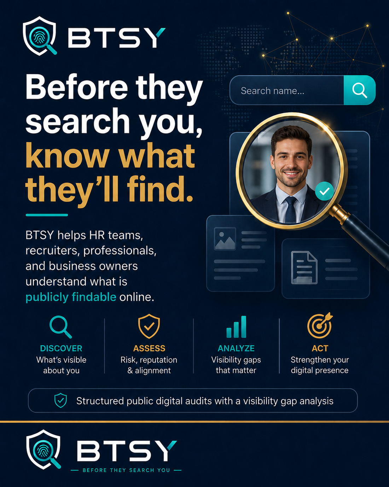
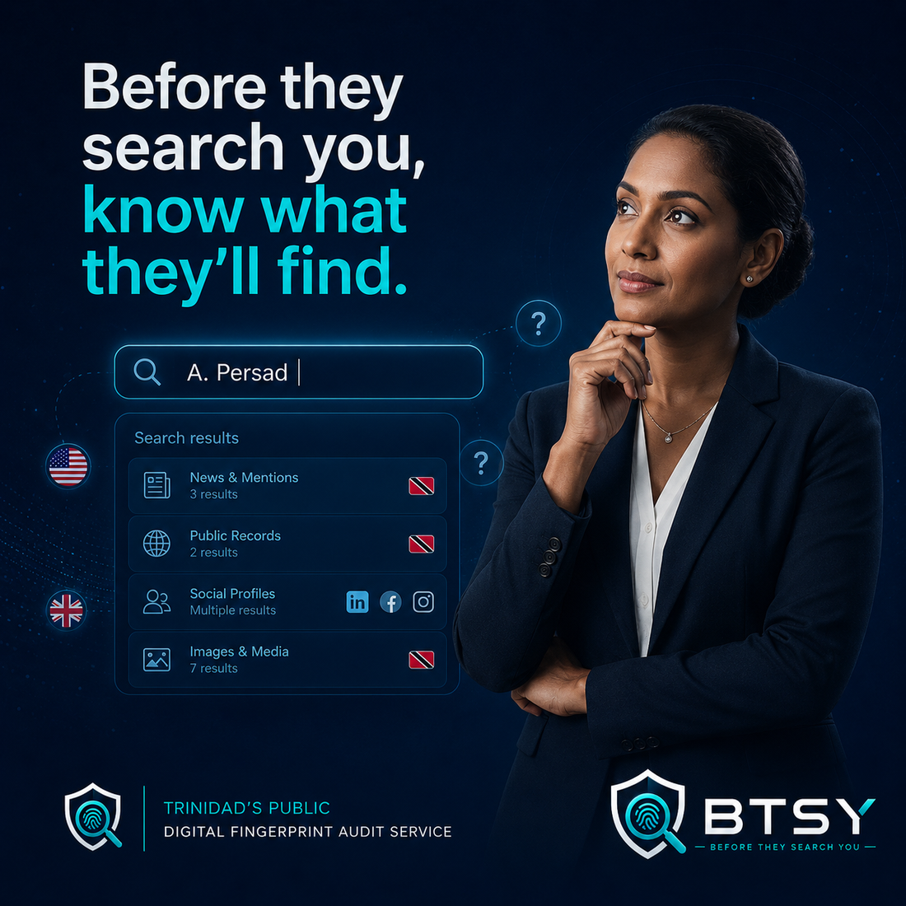

What is BTSY?
BTSY, Before They Search You, is a public digital fingerprint audit and online visibility service in Trinidad and Tobago. BTSY reviews public online information only and turns visible findings into a clear report.
BTSY is a public digital fingerprint audit and online visibility service in Trinidad and Tobago. We review public online information only and show people and businesses what is publicly visible before someone searches them.
What shows up when someone searches you? Find out before they do.

BTSY helps people and businesses understand their public online presence using public-data only.
BTSY, Before They Search You, is a public digital fingerprint audit and online visibility service in Trinidad and Tobago. BTSY reviews public online information only and turns visible findings into a clear report.
A public digital fingerprint audit is a structured review of what appears publicly about a person or business online, including search results, public profiles, websites, directories, image results, and other public-facing information.
BTSY is for job seekers, professionals, creators, founders, business owners, employers, and organizations that want to know what people may see before a decision, enquiry, interview, or partnership.
BTSY reviews public search results, public social profiles, public websites, public business listings, public directory mentions, image results, public AI answer signals, and visible online consistency issues.
BTSY is not spying, hacking, surveillance, private investigation, background checking, or guaranteed reputation repair. BTSY does not access private accounts, private messages, passwords, locked profiles, deleted content, or private records.
Request your audit by sending a WhatsApp message to 1-868-795-3112 or by using the BTSY audit request form. You receive package confirmation, payment instructions, and a clear timeline.
Public prices are TT$500 for the Personal Standard Audit, TT$900 for the Personal Deep Dive Audit, TT$450 for the Business Visibility Snapshot, and TT$1,200 for the Business Visibility Builder.
Public-data only means BTSY uses information that is already visible online. The audit is based on public search results, public profiles, public sites, public listings, public images, and public business information.
For job seekers, professionals, founders, and creators who want to see the public picture before a decision is made on it.
BTSY keeps the focus on public digital fingerprint findings: search results, public social profiles, public websites, directory listings, image results, and other public-facing material.
Nothing private, nothing hidden, no guesswork.

For Trinidad and Tobago businesses whose customers need to find clear, trustworthy information before they enquire. BTSY reviews how the business appears in search engines, social platforms, directories, and AI answer tools.
If your business isn't easy to find, your competitors may be getting the enquiry instead.
A visual look at BTSY public digital fingerprint audits and online visibility service reports.
Public-facing online information connected to the person or business.
What customers see, what helps you, what hurts you, and what to fix first.
Visible concerns and notable public findings summarized clearly.
A focused report that helps you decide before you send or move forward.
Four clear public packages for personal audits and business visibility audits.
Best for job seekers, professionals, creators, and founders who want to know what appears publicly before someone searches them.
Best when you want a fuller review of search results, public profiles, image results, directory mentions, and older public content.
Best for businesses that want to know how they appear on Google, social platforms, directories, and AI answers before paying for fixes.
Best for businesses that want the audit plus ready-to-use fixes, including page wording, profile corrections, FAQ content, metadata, and visibility recommendations.
Corporate checks and monthly visibility partner services are available by request through the BTSY audit form. Public-data only. No private accounts. No guaranteed outcomes.
A simple request, a clear review, and a human-reviewed report built around public-data only.
A public digital fingerprint audit is a structured review of what is publicly visible about a person or business online. BTSY reviews public online information only and summarizes what appears in search results, public profiles, websites, directories, images, and other public-facing sources.
No. BTSY does not access private accounts, private messages, passwords, locked profiles, deleted content, credit records, police records, or medical records. BTSY uses public-data only.
No. BTSY is not a background check service. BTSY is a public digital fingerprint audit and online visibility service that reviews public online information only.
BTSY is for job seekers, professionals, creators, founders, business owners, and organizations that want to understand what appears publicly before someone searches them.
Yes. Businesses can use BTSY to review how they appear on Google, social platforms, directories, and AI answers before paying for fixes or visibility work.
Send a WhatsApp message to 1-868-795-3112 or use the BTSY audit request form. You will get confirmation, payment instructions, and a clear timeline.
Public-data only means BTSY reviews information that is already publicly visible online, such as search results, public social profiles, public websites, directory listings, image results, and public business information.
No. BTSY cannot guarantee what search engines, platforms, AI tools, employers, customers, or other people will find online. BTSY provides a careful public-data only audit and practical recommendations based on what is visible at the time of review.
Before they search you, search yourself properly. BTSY gives people and businesses an honest look at their public online presence before someone else takes that look first.